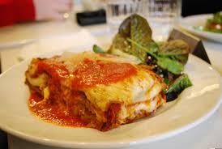

Back Home
Thai Red Curry Soup

Description
Our take on Thai red curry soup calls for jasmine rice instead of rice noodles. We puree the soup before adding onions and herbs for a smooth, rich texture. Adding a squeeze of lemon juice at the end brightens up this traditionally-flavored soup. Serve this as a light dinner entree, or pair it with another protein or vegetable side for a heartier meal.
Ingredients
- tablespoons olive oil, divided
- 18 large shrimp, peeled and deveined
- tablespoons olive oil, divided
- 18 large shrimp, peeled and deveined
- ¼ teaspoon kosher salt
- ¼ teaspoon ground black pepper
- tablespoons olive oil, divided
- 1 large red bell pepper, diced
- tablespoons olive oil, divided
- 1 medium onion, diced
- 3 cloves garlic, minced
- 3 tablespoons red curry paste
- 1 tablespoon grated fresh ginger
- 4 cups unsalted chicken stock
- 1 (13.5 ounce) can light coconut milk
- 1 (8.8 ounce) pouch UNCLE BEN'S® READY RICE® Jasmine
- 2 teaspoons fish sauce
- 2 teaspoons brown sugar
- 3 green onions, thinly sliced
- ¼ cup fresh cilantro leaves, chopped
- 1 tablespoon fresh lime juice
Steps
- Heat 1 tablespoon olive oil in a large Dutch oven over medium heat. Season shrimp with salt and pepper. Add shrimp to pot and cook 2 to 3 minutes or until pink, turning halfway through. Set aside.
- Add remaining olive oil, bell pepper, onion, and garlic to pot. Cook, stirring occasionally, about 3 minutes or until tender. Stir in curry paste and ginger. Cook 1 minute, or until fragrant.
- Stir in stock, coconut milk, and rice, scraping any browned bits from the bottom of the pot.
- Bring to a boil over high heat; reduce heat and cook, stirring occasionally, until reduced, about 10 minutes. Stir in fish sauce and brown sugar. Remove from heat.
- Bring to a boil over high heat; reduce heat and cook, stirring occasionally, until reduced, about 10 minutes. Stir in fish sauce and brown sugar. Remove from heat.
- Stir in green onions, cilantro, basil, and lime juice. Divide soup evenly among 6 bowls and top each bowl with 3 shrimp. Serve immediately.
Attributaion
This is a class project, thanks to the amazing team at All RecipesAllRecipes for providing this recipe.
You can find the full recipe here. Click on the link to access. World's Best Lasagna